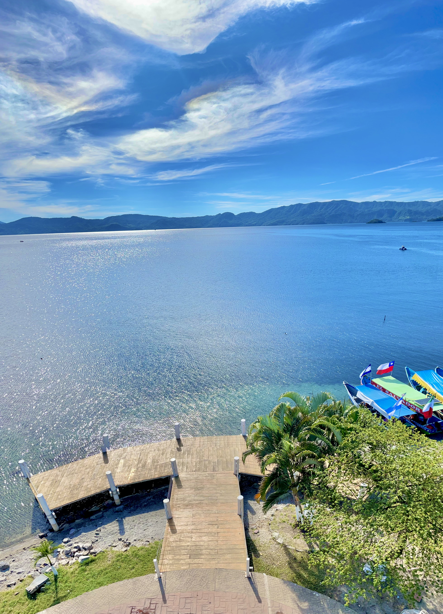

auronplay
2,450 Me gusta
@auronplayTraje mi computadora aqui y me la dejaron como nueva.
¡Muchas gracias por su increible servicio, me habeis salvado de los sobrecalentamientos que tienen los streams!#Recomendado #fyp #tecnologia #kick #twitch
elmarianaa necesito contactar pero ya a este taller wey 👀👀
elmarianaa necesito contactar pero ya a este taller wey 👀👀
davoobj

3,120 Me gusta
davoobjChe, mi computadora estaba fallando y la lleve a este taller, me la dejaron al toque.
Espero esten preparados para el stream de hoy, ojo si sos peruano te baneamos solo entres pibe, en verdad gracias a este maravilloso taller
@alcaldedeamatitlan asi quisiera yo tener nuestro lago pero no se puede 😭🤩🤙✨
@alcaldedeamatitlan asi quisiera yo tener nuestro lago pero no se puede 😭🤩🤙✨